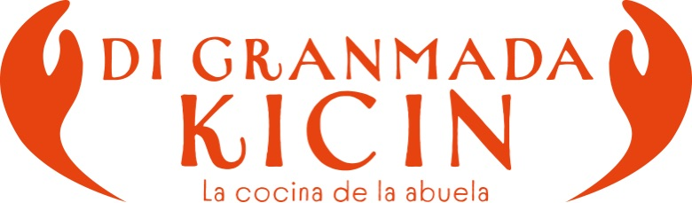

Nuestros Medios
Explora la experiencia en Realidad Virtual, nuestra App y el documental interactivo.
Ver Medios

Descubre la magia, la historia y la cultura transmedia detrás de las recetas tradicionales de la región insular colombiana.
Descubrir la HistoriaExplora la experiencia en Realidad Virtual, nuestra App y el documental interactivo.
Un mapa interactivo con los mejores sitios y paradas obligatorias para comer en la isla.
Conoce la investigación, la identidad raizal y quiénes hacen posible "Di Granmada Kicin".